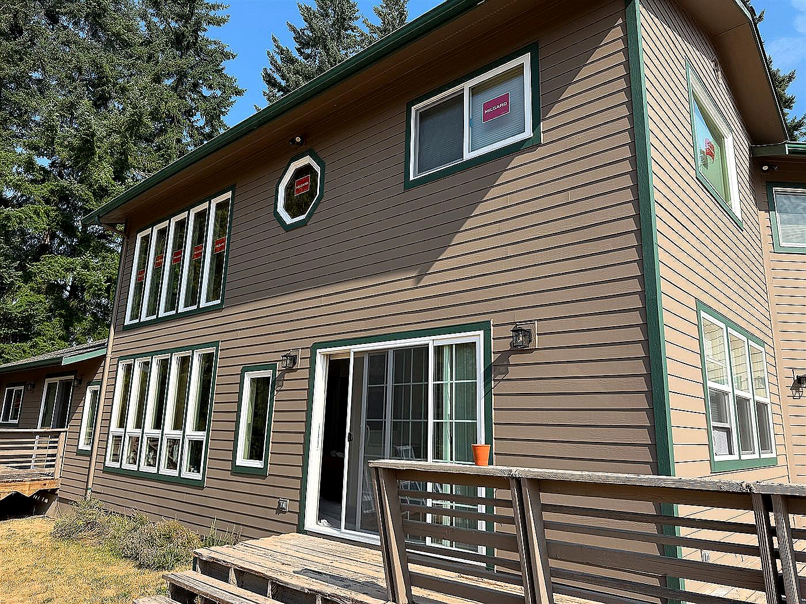

Built around the home, not a generic package
The right siding plan depends on the house, access, existing damage, and the look you want. We help compare options such as fiber cement, vinyl, cedar, and engineered products.
Make the exterior easier to maintain
Replacing siding is also a chance to improve trim details, seal vulnerable transitions, and create a cleaner maintenance plan for future paint and caulk upkeep.
Breeze Siding serves Redmond, Kirkland, Bellevue, Sammamish, and nearby Eastside communities.